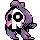
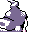

#180
Duskull
Ghost
It hunts through thick walls by tracking targets One eye peers from its skull mask
Base stats Total 235
HP50
Attack40
Defense60
Speed25
Special60
Details
- Species
- Requiem
- Height
- 2'07"
- Weight
- 33.0 lb
- Catch rate
- 190
- Base exp
- 97
- Growth
- Slow
Level-up moves
LevelMoveType
StartConfuse RayGhost
StartNight ShadeGhost
Lv 7LeerNormal
Lv 9LickGhost
Lv 11DisableNormal
Lv 14HypnosisPsychic
Lv 17Confuse RayGhost
Lv 20Night ShadeGhost
Lv 39Shadow BallGhost
Lv 40PsychicPsychic
Evolution
Where to find
TM / HM
TM06 ToxicTM07 Shadow BallTM08 Body SlamTM10 Double-EdgeTM13 Ice BeamTM14 BlizzardTM29 PsychicTM31 MimicTM32 Double TeamTM42 Dream EaterTM44 RestTM50 SubstituteHM05 Flash